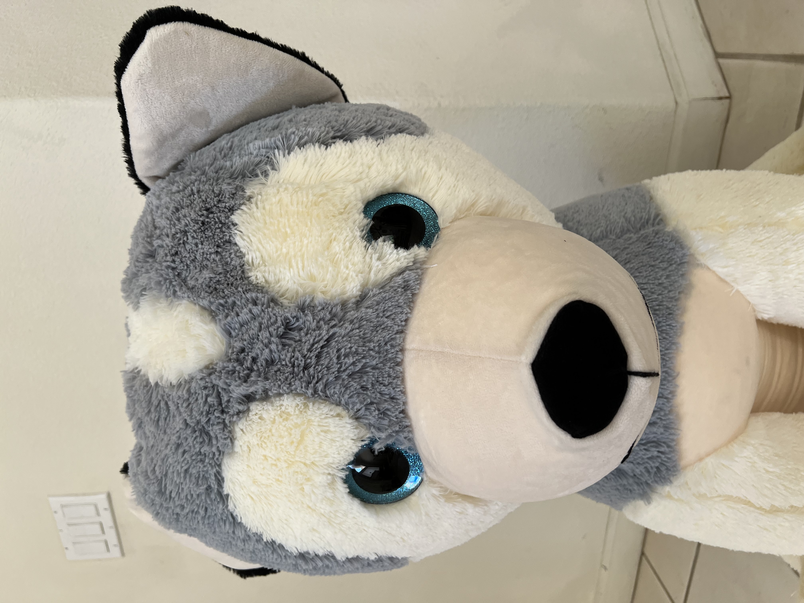
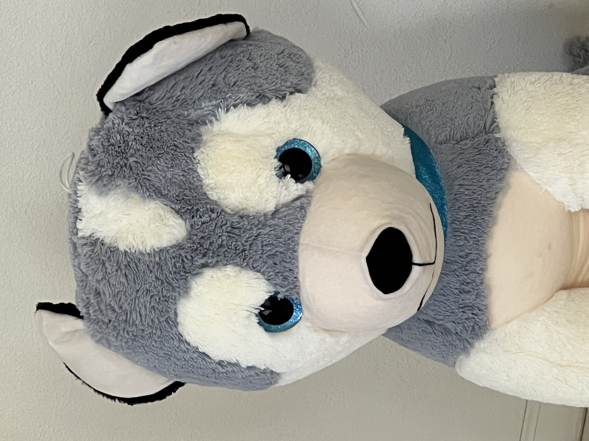

Goal: demonstrate how lens choice, distance, and angle affect facial proportions.
Replace the placeholder images below with your own.

Wrong Way: Very close with a wide lens (e.g., 24mm), low angle → exaggerated nose/forehead, distorted edges.

Right Way: Step back and use a longer focal length (e.g., 50–85mm equivalent), eye-level → more natural proportions.
Setup
Wrong: Arm-length, front camera, wide lens, tilted up from below.
Right: Phone a bit farther away (self-timer) or use rear camera; keep lens around 50mm+ equivalent; camera at eye level.